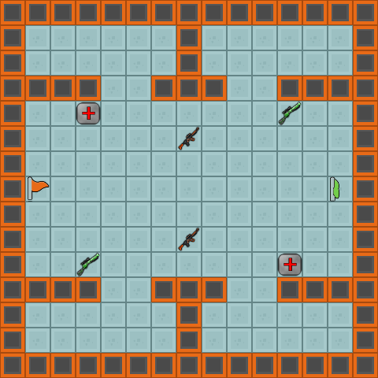
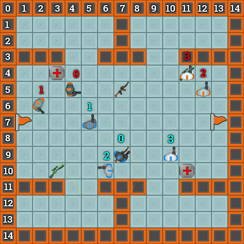

Python API Basics¶
This page only contains the basics of the Python API. For the full API, see the Python docs.
TL;DR
The goal of your do_move method is to give each of your FriendlyUnits an action.
Positions/Coordinates/Points in the Python API are represented using a tuple of two integers: (x, y).
The game provides very fast path-finding. See world.get_next_direction_in_path and FriendlyUnit.move_to(destination).
The other APIs mostly give you various ways to get the positions of all the things you might want to path-find to.
Note that the orders you give your units are not executed until after the turn ends (and your function exits). You can get the actual result of the execution in your next turn with friendly_unit.last_move_result, .last_shot_result, and .last_pickup_result
The PointUtils and Direction classes have several useful utility methods.
All of the available information regarding the game is provided to the do_move method in PlayerAI.
Warning
Don’t change the function definition for do_move. This function is called by the client code (which you also shouldn’t modify) because when you submit your file only your PlayerAI file and any additional libraries are kept and any client code is removed. Thus, if you change the method, your code will cause an Exception and ultimately invalidate all of your work.
The World¶
The top left coordinate of the world is (0, 0).
# Some sample code given the above map as a world
world.control_points # An array of 2 ControlPoint instances
# Mainframes are included in the above list. They are control points with .is_mainframe set to True.
world.pickups # An array of 6 Pickup instances
world.get_positions_of_pickup_type(PickupType.WEAPON_LASER_RIFLE) # Returns [ (7, 5), (7, 9) ]
world.get_positions_of_pickup_type(PickupType.WEAPON_RAIL_GUN) # Returns empty list
world.get_nearest_control_point((0, 0)) # Returns Control Point at (1, 7)
world.get_nearest_control_point((0, 0)).controlling_team # Evaluates to Team.AMBER
world.get_next_direction_in_path((6, 2), (8, 2)) # Returns Direction.SOUTH_WEST
Controlling a Unit¶
The units in this image have their index in their respective arrays labelled on the tile above them. The first row and column have been numbered as well. This is for convenience of interpreting the examples below and does not show in the real game.
Sample code below uses the above map as a world, and given the Amber units as friendly_units (subsequently Blue units are enemy_units)
Moving¶
# Checking a move
# ---------------
friendly_units[0].check_shot_against_enemy(Direction.NORTH_WEST)
# Returns MoveResult.MOVE_VALID.
# This will check collisions against the world, and conflicts with other units on your team.
# Keep in mind that check_shot_against_enemy will not actually move the unit.
# To order a unit to actually move, see `move` below.
friendly_units[3].check_move_in_direction(Direction.NORTH)
# Returns MoveResult.BLOCKED_BY_WORLD.
# Since there is a wall one tile NORTH of Amber unit 3, it won't be able to move there.
# Checking a move to a destination:
friendly_units[0].check_move_to_destination((4, 1))
# Returns MoveResult.MOVE_VALID.
# This method will use path finding to figure out which direction to go in.
# It checks to make sure there is a path to the destination (if there is not then it returns MoveResult.NO_MOVE_ATTEMPTED),
# as well as collisions against the world, and conflicts with other units on your team.
# Moving a unit
# -------------
friendly_units[0].move(Direction.NORTH_WEST)
# Returns MoveResult.MOVE_VALID, and will move Amber unit 0 to (3, 4) at the end of the turn.
# This method simply moves the unit in the specified direction, and performs the same checks
# (and thus has the same return value) as check_move_in_direction or check_move_to_destination.
friendly_units[0].move_to_destination((1, 1))
# Returns MoveResult.MOVE_VALID, and will move Amber unit 0 to (4, 4) at the end of the turn.
# This method will use path finding to figure out which direction to go in.
# It checks to make sure there is a path to the destination (if there is not then it returns MoveResult.NO_MOVE_ATTEMPTED),
# as well as collisions against the world, and conflicts with other units on your team.
# On the next turn
friendly_units[0].last_move_result
# Evaluates to MoveResult.MOVE_COMPLETED,
# assuming the move to (1, 1) was executed
# Conflicts with friendly units
# -----------------------------
friendly_units[3].move_to_destination(friendly_units[2].position)
# Returns MoveResult.MOVE_VALID.
# Keep in mind that unless you instruct unit 2 to move somewhere else in your turn, the move will fail,
# and friendly_units[3].last_move_result will return MoveResult.BLOCKED_BY_FRIENDLY in the next turn.
# Assuming the two calls below are made on the same turn
friendly_units[3].move(Direction.EAST)
# Returns MoveResult.MOVE_VALID, and will move Amber unit 3 to (12, 4) at the end of the turn
friendly_units[2].move(Direction.NORTH)
# Returns MoveResult.BLOCKED_BY_FRIENDLY. Even though unit 3 has not yet actually moved,
# unit 2's move NORTH will result in a collision.
Shooting¶
# Checking a shot
# ---------------
friendly_units[0].check_shot_against_enemy(enemy_units[1])
# Returns ShotResult.TARGET_OUT_OF_RANGE.
# This will check to make sure you can hit the given enemy from your current position,
# and take into consideration the world and your weapon range.
# Let's assume friendly_units[1] has a Laser Rifle (5 range, 15 damage)
friendly_units[1].check_shot_against_enemy(enemy_units[2])
# Returns ShotResult.CAN_HIT_ENEMY.
# enemy_units[2] is in range and not obstructed, so the shot will hit.
# Keep in mind that you can only shoot the closest enemy, so if there was another enemy between
# friendly_units[1] and enemy_units[2], this method would return ShotResult.BLOCKED_BY_OTHER_ENEMY
# Shooting:
# ---------
friendly_units[0].shoot_at(enemy_units[1])
# Returns ShotResult.TARGET_OUT_OF_RANGE
# All though enemy_units[1] is close enough, shots can only be fired in one of the
# 8 directions.
# Again, let's assume friendly_units[1] has a Laser Rifle (5 range, 15 damage)
friendly_units[1].shoot_at(enemy_units[2])
# Returns ShotResult.CAN_HIT_ENEMY, the same result as our
# check_shot_against_enemy call above (it performs the same checks).
# If this method is called, enemy_units[2] will find its face full of laser
# at the end of the turn.
# On the next turn
friendly_units[1].last_shot_result
# Evaluates to ShotResult.HIT_ENEMY
# Assuming the shoot_at call above was made.
# After the shot:
# ---------------
# On the next turn, from the other player's perspective (so friendly_units and enemy_units have swapped)
friendly_units[2].get_last_turn_shooters()
# Returns array of just enemy_units[1], since above it was friendly_units[1] (i.e. BRAVO)
# Since Amber's BRAVO unit was the only unit to shoot Blue's CHARLIE unit,
# it is the only one in this array.
friendly_units[2].damage_taken_last_turn
# Evaluates to 15, since Amber's BRAVO has a Laser Rifle (which does 15 damage)
# If more units shot us, then this would be the sum of all their shots.
Obtaining Pick-ups¶
# Checking if there is a pick up under Unit 0's (Amber's ALPHA) feet:
friendly_units[0].check_pickup_result()
# Returns PickupResult.NOTHING_TO_PICK_UP, since there is nothing under the unit's feet.
# Trying to pick up will return the same thing as the check above
friendly_units[0].pickup_item_at_position()
# Returns PickupResult.NOTHING_TO_PICK_UP.
# (Amber) Unit 3 however, has a scatter gun underneath it.
friendly_units[3].pickup_item_at_position()
# Return PickupResult.PICK_UP_VALID, as there is a scatter gun there.
# The type of pick up can be determined like this:
world.get_pickup_at_position(friendly_units[3].position).pickup_type
# Evaluates to PickupType.WEAPON_SCATTER_GUN
# On the next turn, assuming we executed friendly_units[3].pickup_item_at_position() above
friendly_units[3].last_pickup_result
# Evaluates to PickupResult.PICK_UP_COMPLETE, since there was an item.
# friendly_units[3] now has a scatter gun (friendly_units[3].current_weapon_type will now return WeaponType.SCATTER_GUN)
Using Shields¶
# Check if we can activate a shield (this will check if we have one in our inventory)
if friendly_units[0].check_shield_activation() == ActivateShieldResult.SHIELD_ACTIVATION_VALID:
# Activate a shield
friendly_units[0].activate_shield() # Returns ActivateShieldResult.SHIELD_ACTIVATION_VALID, and will activate a shield this turn
# Check if a shield is already active before we activate a new one
if friendly_units[0].check_shield_activation() == ActivateShieldResult.SHIELD_ACTIVATION_VALID and \
friendly_units[0].shielded_turns_remaining <= 0:
# Activate a shield
friendly_units[0].activate_shield() # Returns ActivateShieldResult.SHIELD_ACTIVATION_VALID, and will activate a shield this turn
# On the next turn...
friendly_units[0].shielded_turns_remaining # Evaluates to 5
Utilities¶
The API features various utility methods. The more commonly used ones are below. The full list can be found in the :doc:`Python docs <pydoc/PythonClientAPI.libs.Game>`_. See the Doc Strings above for full descriptions of the methods.
# Direction:
Direction.from_to((0, 0), (1, 1)) # Returns Direction.SOUTH_EAST; The direction between two points, i.e. the direction from Point a to Point b
Direction.NORTH.move_point((0, 1)) # Returns (0, 0). Moves a point one tile in the direction
# PointUtils:
import PointUtils
add_points((1, 1), (1, 2)) # Returns (2, 3); Adds two points together
sub_points((2, 3), (1, 2)) # Returns (1, 1); Subtracts the second point from the first one
scale_point((1, 2), 3) # Returns (3, 6); Multiplies a point's members by a scalar
chebyshev_distance((1, 1), (2, 3)) # Returns 2; Calculates Chebyshev or Chessboard distance between two points
are_points_inline((2, 3), (3, 3)) # Returns True; Checks if two points are in a straight vertical, horizontal, or diagonal line from one another.
Path-finding¶
For your convenience, we have provided a built-in path-finding algorithm. It will provide the shortest possible path, however, it does not avoid enemy or friendly units, taking into account only the world geometry. The algorithm is used behind the scenes to return results in
world.get_next_direction_in_path(start, destination)
and
world.get_path_length(start, destination)
and
friendly_units.move_to(destination);
In maps that have a compiled navigation cache (a <map name>.nac file; all maps created by us have one), the path-finding will be almost instant (run-time complexity O(1) ). On maps without this file, the client will display a warning upon starting, and the path-finding may be substantially slower. To create a cache for your custom maps, see Making custom maps.
If you need more advanced features in your path-finding, you are more than welcome to implement your own algorithm. Just keep an eye on that time limit!